I am a robotics/mechanical engineering double major who is always involved in too many projects. When not making something, I spend my free time cooking and watching movies.
1996-2001
Sydney, Australia
I grew up in Sydney. This is the start of my multicultral upbringing
2001-2015
Shanghai, China
I spent 13 years in Shanghai, the place I call home.
2015-2019
Pittsburgh, United States
I am currently pursuing a mechanical engineering and robotics double major at Carnegie Mellon University.
2019-???
Things to come
We'll see!
Skills
Over the course of my education, I developed an interdiscplinary skillset.
Design and Engineering
In my coursework, personal projects, and work experience, I've gained expertise in developing electro-mechanical systems. I balance unrestrained creativity with technical knowledge to design innovative solutions.
Programming
I developed software ranging from computer vision trackers to 3D video games. I am comfortable working in many programming languages and have experience working with many software packages ranging from running large ROS systems across multiple machines to efficient scripting with Scipy.
Team Work
Through working in a variety of leadership role and highly collaborative teams, I've gained valuable experience in communication and collaboration. I always find myself taking ownership in collaborative projects, keeping the team on track.
In the summer of 2017, I worked in a team of three to develop computer vision trackers and gesture recognition for a commercial drone product.
I joined Autel Robotics halfway through the tracker project. I was responsible for testing the MATLAB tracker on various subjects and improving tracker performance. I researched techniques such as binary color mapping to remove the background, or temporal sampling to improve the frame rate. I also cleaned up the code for migration to embedded execution. In reviewing literature to understand the techniques used, I learned a lot about FHOG features and correlation filter trackers.
When the gesture recognition project began in the second half of my internship, I got my hands dirty building it up from scratch. I helped design the gesture pipeline from pedestrian detection, to tracking and gesture recognition. I adapted a pedestrian and gesture detector from MATLAB to OpenCV in C/C++, while the rest of the team trained the model in MATLAB and developed other methods. I also worked on cross compiling the pipeline and testing it on an ARM board. Since I had to translate everything from MATLAB to C++, I explored every part of the system and gained a deep understanding of the pipeline.
Date: Summer 2017
Multipurpose Mobile Manipulator
Versatile robotics platform.
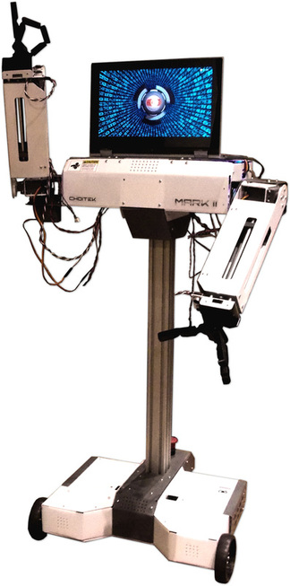
The MMM is an educational robotics platform targeting highschools. With three degrees of freedom on each arm and two degrees of freedom in motion, the MMM is a versatile robot capable of various tasks.
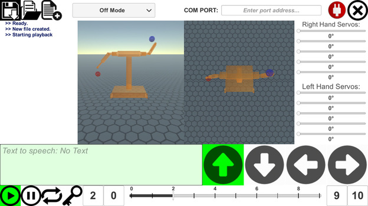
During the summer of 2016, I worked as an independent contractor to develop an animator and an android mobile controller for the robot. Using the animator, the user can intuitively program up to ten minutes of animation, controlling every component simultaneously. The mobile controller allowed up to three people to control various parts of the robot at once. The documentation is available on the company website here.
I also participated in another project funded by the Undergraduate Research Office at Carnegie Mellon University. I led groups of students to create short parody films involving the MMM as the main actor. These films will be available on Youtube shortly.
This is an official Robotics Club project developing a quadcopter system that can navigate indoors. The quadroter combines LIDAR imaging and computer vision to perform SLAM. I work as the project coleader, designing both mechanical aspects of the quadrotor and programming simulations and behavior using ROS. There is detailed documentation on Github.
Here the quadrotor demonstrates indoor SLAM.
Date: 2016-2018
Amphibious Rescue Craft
Prototype amphibious vehicle.
The ARC is an independent project funded by the CMU Undergraduate Research Office's SURG program and by the Robotics Club. I worked with two others to develop the robot in the 2017 spring semester.
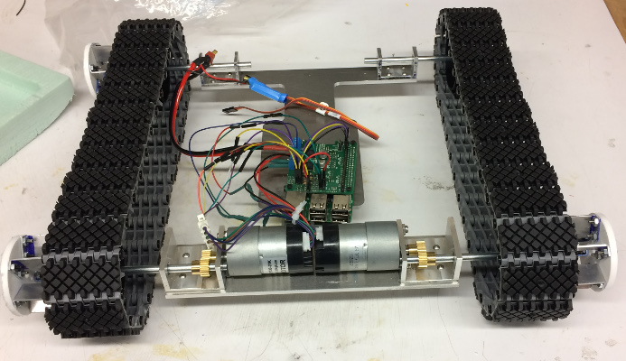
I designed the chassis, hull, and mounting brackets using Solidworks and manufactured them using CNC. I also designed the mechatronics system involving two DC motors driven using a Raspberry Pi 3.
Click the image below to see full drawing.
The robot was showcased at the Meeting of the Minds Symposium at CMU. Click here to download a zip of the Solidworks assembly and other project files.
Video demos and the poster are shown below.
I worked two others to create a crane for a Stress Analysis course project. The crane was built from sheet aluminum and was able to lift a one pound weight by two inches. Find out more on the project website.
Date: Spring 2016
PyOCR
Scan and execute printed or written code.
PyOCR is a program that utilized Tesseract OCR to scan written or printed code and execute it. I created as the term project for an introductory computer science course at CMU, and it was showcased at the end of the course. A video demo is available below.
Date: Fall 2015
Spacecraft Game
Voxel-based space combat game.
I worked with another developer to create a space game in Unity3D. The game focuses on building spaceships using cubic components then fighting other players.
Date: 2015-2017
Mobile Robot Programming
Autonomous two-wheeled robot delivering paddles.
For a course offered by the Robotics Institute, I learned programming principles on mobile robots. The robot is a two wheeled robot with encoders, LIDAR and a forklift. I programmed feedback/feedforward control, odometry, localization, and trajectory planning to complete navigational challenges. The robot needs to localize within a walled area and autonomously move pallets from the center of the area to the goal area.
Date: Fall 2016
Design at CMU
Hands-on projects course.
In the fall of 2017, I completed three projects during the Design I course at CMU. These projects expanded my skills in hand stress analysis, CAD, FEA analysis, catalog component selection, design for manufacturing, and more.
The first project is the astronaut's coat hanger. The task is to design a laser cut acrylic hanger that can withstand a 40 lb static load, optimizing for mass. To complicate the problem, there are certain "interference zones" where our part cannot enter. Our final design weighed 2.7 g, or 0.006 lb.
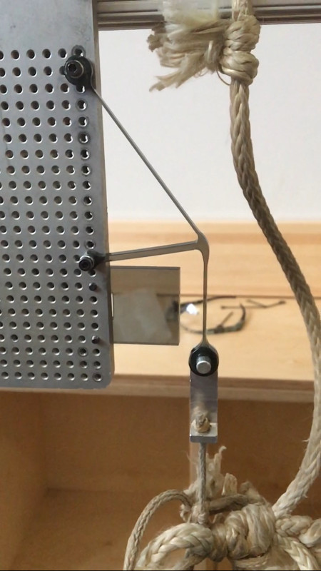
The acrylic tab represents the interference zone. The rope connected to the metal bracket is carrying a 40 lb weight. A detailed report covering the design process can be found here.
The second project is the robotic gripper. The task is to design a motor driven gripper that can pick up a 2 kg weight, then swing without dropping it. The weight is irregularly shaped, and must be held without shifting more than 0.1 in. The arm is almost 30 in long, making the dynamic loading a significant concern. Finally, we are also constrained to a $350 budget, making material selection a concern.
The third project was the four bar linkage walking robot. The task is to design a four legged robot that can climb up stairs, step over hurdles, and walk across pebbles. The legs are all part of four bar linkages driven by one motor. Each group also had scoring weights for each of the obstacle courses. For my group, we needed to focus the most on the rocks.
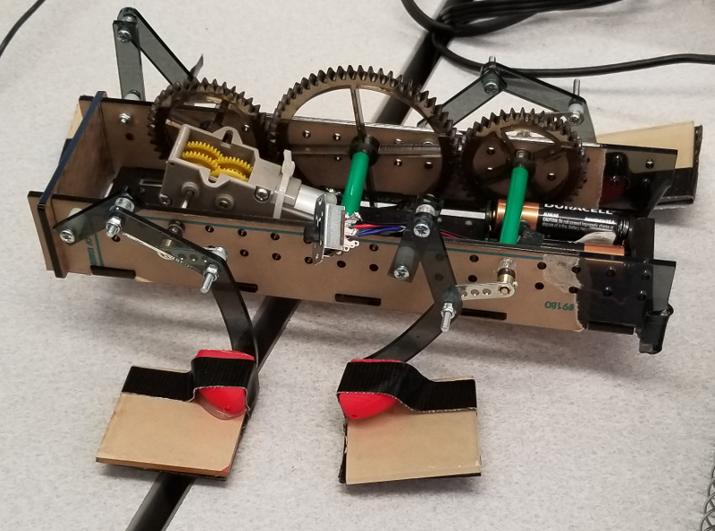
Our robot was able to pass every course, though it was not the fastest.
Date: Fall 2017
Cooper Perkins
Technology Development and Engineering Firm
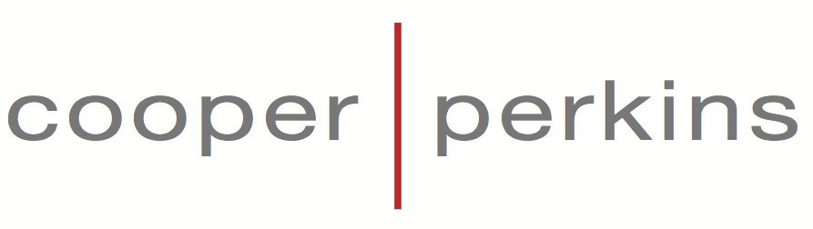
In the summer of 2018, I worked as a mechanical engineering intern at Cooper Perkins. I worked in highly collaborate small teams and completed three different projects. I got to bring the projects from brainstorming and refining concepts to assembly and testing the prototype.
The first project I worked on was a electromechanical user interface which changed shapes by using a motor driving a complex mechanism. I worked in a team of four from project kick-off to final prototype handoff. I was involved in the full spectrum of project devlopment tasks, including brainstorming, breadboarding, detailed designing, prototyping, testing and debugging. At the end of the project, the client was very impressed with what my team achieved in a relatively short time frame.
I worked with another team of four on an early concept development project to help one of Cooper Perkin's clients come up with new ways to collect fish from an underwater pen. This project focused on brainstorming, concept refinement, and cross-pollination. Near the end of the project I helped evaluate concepts and select the best ones to present to the client. The work resulted in highly refined concepts and recommendations that were presented to an extremely satisfied client.
I also worked on an internal project, developing a tolerance analysis tool for use by other members of the Cooper Perkins team. I programmed an interactive Excel sheet that performed Monto Carlo simulations on toleranced dimensions.
The Dumpling Bot is the Robotics Capstone project that I am working on to complete my degree. I am working in a team of three to develop an autonomous restaurant waiter robot that can deliver food from kitchen to table.
The capstone project lasts two semesters. In the fall, we worked on developing system specifications and designs. We applied system engineering principles to generate requirement specifications, concept designs, and detailed test plans. This includes the concept diagrams and system architecture shown below.
Fig.1 Use case Diagram
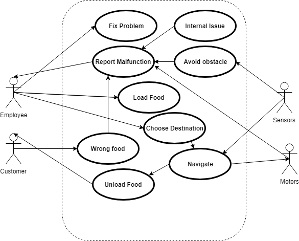
Fig.2 System Architecture
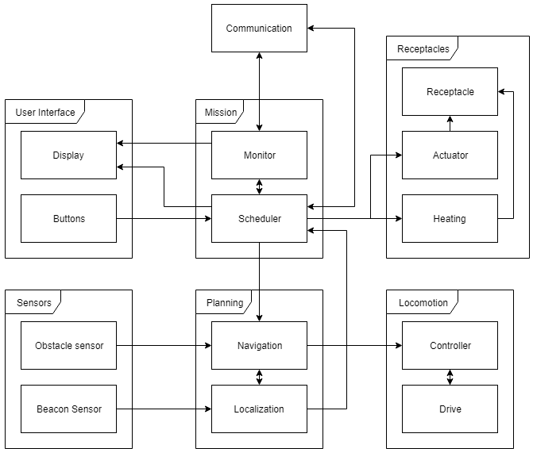
In my team I've taken charge of mechanical designs along with eletronics integration. I worked to design key mechanical components such as the wheel assembly shown below. I sourced every off the shelf part and specified engineering drawings for any in-house machined part such as the motor mount. I also designed and soldered the wire harnesses, motor controllers, and power supply boards that the robot needs for its electronic functions. I programmed a Raspberry Pi to controller the motors through serial communication and integrated ROS to communicate with offboard computers.
Fig.3 Wheel Assembly
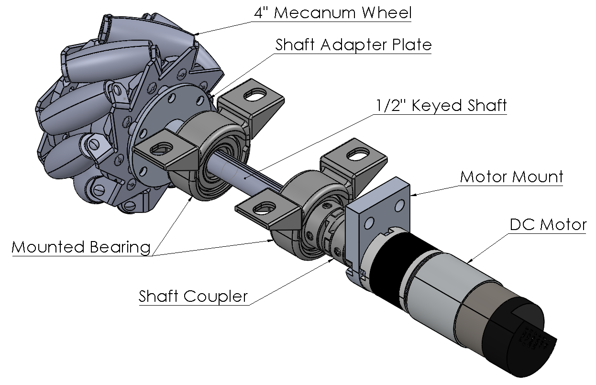
Now in the spring, we are implementing the robot and presenting our project in May. To keep the project on track, we've created work breakdown structures and a Gantt chart schedule.
Fig.4 Work Breakdown Structure
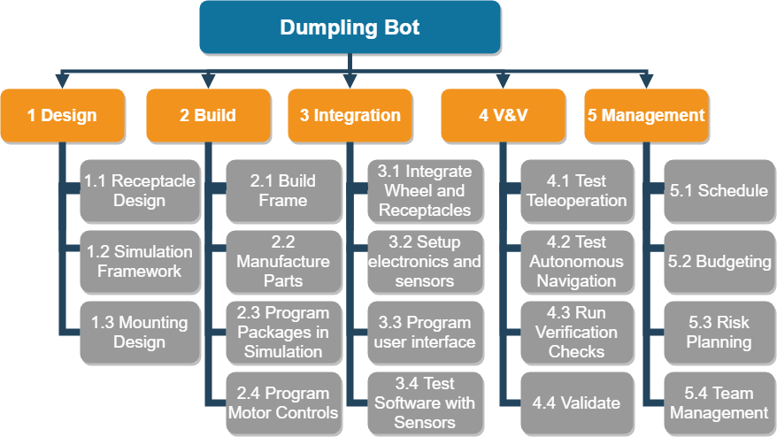
Fig.5 Gantt Chart
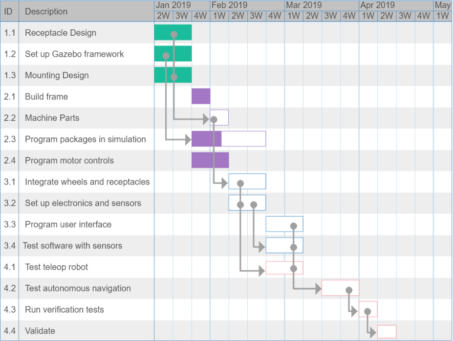
As of now (March), we are about 70% through the project. When the robot is working (fingers crossed) I'll upload a few videos here!


 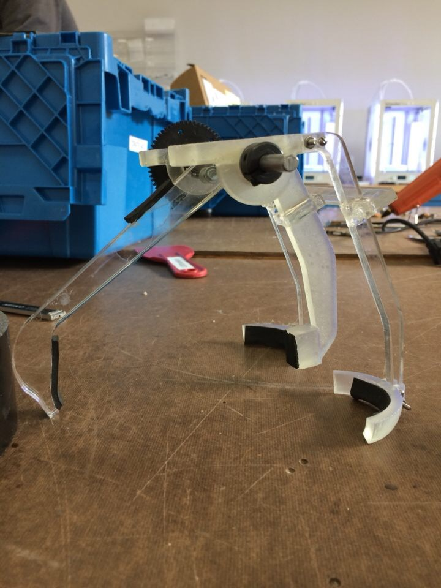
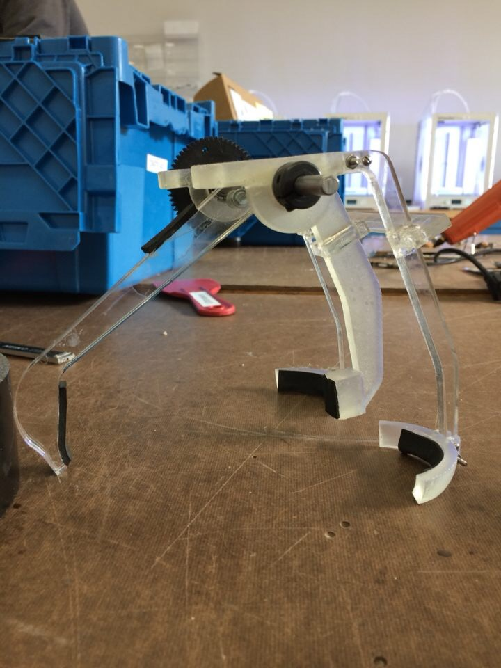